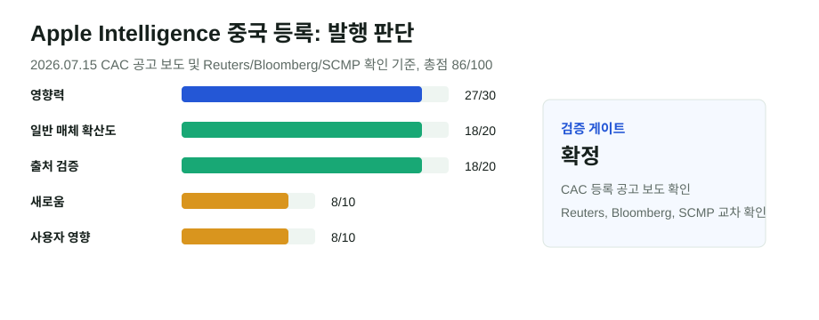

Apple Intelligence 중국 등록: iPhone AI가 Qwen·Baidu와 함께 들어간다
중국 인터넷 규제 당국이 Apple Intelligence를 포함한 7개 스마트폰 단말 생성형 AI 서비스를 등록 목록에 올렸다고 Reuters, Bloomberg, SCMP와 중국 매체들이 보도했다. Apple의 중국 AI는 미국·유럽식 모델을 그대로 들여오는 방식이 아니라 Alibaba Qwen과 Baidu 기능을 붙이는 현지화 모델이 된다.
핵심 요약
등록은 끝났지만, 실제 사용자 출시일과 기능 범위는 아직 Apple 발표가 필요하다
Reuters는 중국 규제 당국이 Apple Intelligence의 iPhone용 온디바이스 생성형 AI 서비스를 등록했다고 보도했고, Alibaba는 Qwen이 중국 사용자의 iOS, iPadOS, macOS, visionOS 경험에 통합된다고 밝혔다. SCMP는 Baidu가 일부 기능을 제공한다고 전했고, 중국 매체들은 2026년 7월 8일 등록 완료, 7월 15일 공고라는 날짜를 보도했다.

선정 이유
이 뉴스는 중국 AI 시장에서 외국 스마트폰 업체가 어떤 방식으로 생성형 AI를 제공할 수 있는지 보여주는 기준점이다. Apple은 개인정보 보호와 온디바이스 AI를 강조해 왔지만, 중국에서는 현지 모델, 현지 규제, 현지 파트너 조합 없이는 기능을 제공하기 어렵다. Qwen과 Baidu의 역할은 중국 AI 모델이 글로벌 기기 생태계 안으로 들어가는 사례이기도 하다.
점수표
| 기준 | 점수 | 판단 |
|---|---|---|
| 영향력 | 27/30 | Apple, Alibaba, Baidu, 중국 스마트폰 AI 규제가 한 이슈에 묶였다. |
| 일반 주요 매체 확산도 | 18/20 | Reuters, Bloomberg, Barron's, SCMP와 중국 경제매체가 반복 보도했다. |
| 신뢰도/출처 검증 | 18/20 | CAC 공고를 인용한 보도와 Alibaba 확인, 복수 매체 교차 확인이 있다. Apple의 직접 발표는 아직 없다. |
| 새로움/중복 회피 | 8/10 | 어제는 보류였지만, 오늘은 공식 공고 인용과 주요 매체 확인이 보강되어 발행 기준을 넘었다. |
| 사용자 영향 | 8/10 | 중국 iPhone 사용자, 앱 개발자, 한국 기업의 중국 서비스 현지화 전략에 영향이 있다. |
| 블로그 적합도 | 4/5 | 기술·정책·시장 구조를 함께 설명하기 좋다. |
| 이미지/도표화 가능성 | 3/5 | 외부 이미지는 쓰지 않고 점수표와 검증표로 정리했다. |
검증표
| 검증 항목 | 결과 | 메모 |
|---|---|---|
| 원문 확인 | 확정 | 중국 매체들이 "网信中国" 공고와 7개 단말 생성형 AI 서비스 등록을 인용했다. |
| 독립 확인 | 확정 | Reuters, Bloomberg, SCMP, Barron's가 핵심 사실을 보도했다. |
| 전문매체 확인 | 확정 | The Information, MacRumors, TechRepublic 등도 Apple·AI 관점에서 후속 해석을 냈다. |
| 반대 확인 | 확정 | 등록은 출시 허가에 가까운 행정 절차이나, 실제 기능 배포일과 범위는 미공개라는 점을 분리했다. |
| 날짜 확인 | 확정 | 등록 완료일은 2026년 7월 8일, 공고와 주요 보도일은 2026년 7월 15일, 글 발행일은 2026년 7월 17일이다. |
| 수치 확인 | 확정 | 7개 서비스 등록, Apple 중국 2분기 출하 증가 등은 출처가 있는 경우에만 제한적으로 사용했다. |
| 이해관계 확인 | 확정 | SCMP는 Alibaba 소유 매체이고, Alibaba의 Qwen 통합 설명은 회사 이해관계가 있는 발언임을 감안했다. |
본문 해설
Apple Intelligence의 중국 등록은 "Apple AI가 중국에 곧 켜진다"보다 복잡하다. 등록은 공공 대상 생성형 AI 서비스를 제공하기 위한 핵심 절차지만, Apple이 언제 어떤 기기와 OS 버전에 기능을 배포할지는 아직 발표하지 않았다. 그래서 이번 글은 등록 완료와 실제 서비스 출시를 분리해 본다.
가장 중요한 변화는 모델 공급 구조다. 중국 밖에서 Apple은 자체 온디바이스 모델, Private Cloud Compute, OpenAI나 Google 같은 외부 모델 조합을 설명해 왔다. 중국에서는 Alibaba Qwen이 텍스트·이미지 이해와 생성 기능을 맡고, Baidu가 검색 또는 일부 AI 기능에 관여하는 구조로 보도됐다. 이는 중국 규제 환경에서 외국 플랫폼이 현지 모델을 우회할 수 없다는 뜻이다.
중국 스마트폰 시장에서는 Huawei, Xiaomi, OPPO, vivo가 이미 AI 기능을 전면에 내세우고 있다. Apple은 하드웨어 브랜드 충성도는 강하지만, 생성형 AI 기능에서는 중국 내 출시가 늦었다. 이번 등록은 iPhone의 중국 경쟁력을 회복할 수 있는 조건을 만들지만, 동시에 Apple의 글로벌 AI 경험이 지역별로 달라질 수 있음을 보여준다.
반대 해석/주의할 점
이 모듈을 넣은 이유는 "중국 승인"이라는 표현이 과도하게 확정적으로 읽힐 수 있기 때문이다. 등록은 큰 장벽을 넘은 것이지만, Apple이 전체 Apple Intelligence 기능을 그대로 제공한다는 뜻은 아니다. 데이터 처리 위치, 모델 호출 범위, Siri 기능, 이미지 생성 제한, 검열·안전 필터는 중국판에서 달라질 수 있다.
글로벌 시각 vs 한국 시각
글로벌 시각에서는 Apple이 중국 규제를 수용해 현지 파트너를 붙인 사건이다. 한국 시각에서는 중국에 서비스를 내는 하드웨어·앱·콘텐츠 기업이 생성형 AI 기능을 어떻게 현지화해야 하는지 보여주는 사례다. 한국 기업도 중국 사용자에게 AI 기능을 제공하려면 모델 선택보다 먼저 등록, 데이터 처리, 현지 파트너 구조를 검토해야 한다.
출처 링크
- Reuters: Apple Intelligence AI service registered with China's cyberspace regulator
- Bloomberg: Apple Gets Approval for iPhone AI in China With Alibaba, Baidu
- SCMP: China approves Apple Intelligence for phones
- Sina: Apple智能在华完成备案，与华为、OPPO、vivo、小米、三星、中兴同批获准
- Apple Newsroom: WWDC26 Apple Intelligence 발표
이미지/표 참고 링크
외부 사진과 통신사 이미지는 사용하지 않았다. 등록 목록 이미지는 중국 매체 화면을 재게시하지 않고 링크로만 남겼으며, 본문 시각 자료는 자체 SVG 점수표다.
저작권 주의사항
기사 원문은 요약과 링크로 처리했다. Reuters·Bloomberg·SCMP·중국 매체의 사진, 표, 유료 기사 본문은 저장하거나 재게시하지 않았다.
발행 전 확인 포인트
- Apple의 중국 공식 출시일, 지원 기기, OS 버전 발표가 나오면 업데이트한다.
- Qwen과 Baidu의 역할은 매체별 표현 차이가 있으므로 기능별 담당 범위를 단정하지 않는다.
- 등록 완료와 즉시 출시를 혼동하지 않는다.